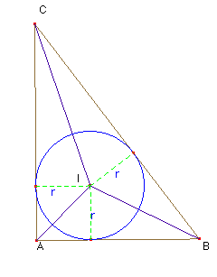

Problema nº 79.- Dado el triángulo rectángulo ABC con los lados de 3cm, 4 cm y 5cm, calcular el valor del radio de la circunferencia inscrita.

Solución.-Solución Saturnino Campo Ruiz, profesor de Matemáticas del I.E.S. Fray Luis de León (Salamanca) (4 de marzo de 2003)
El área del triángulo ABC es la suma de las de los triángulos AIC, AIB y BIC (I es el incentro). Los tres tienen una altura igual al radio r de la circunferencia inscrita, siendo la base uno de los lados de ABC. Así pues el área total del triángulo es igual al valor de su semiperímetro p por el radio r de la circunferencia inscrita.
A = p·r.
Para el triángulo dado, al ser rectángulo, su área es 6 cm2 y su semiperímetro también es 6 cm.
Por tanto el radio de la circunferencia inscrita es igual a 1 cm.
(En el dibujo se ha tomado como unidad 2 cm.)